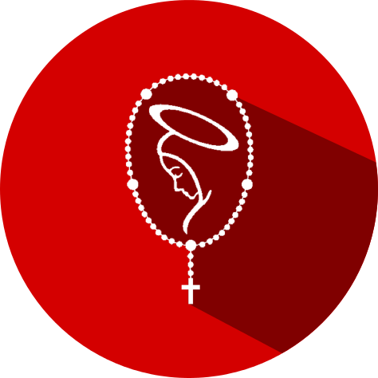
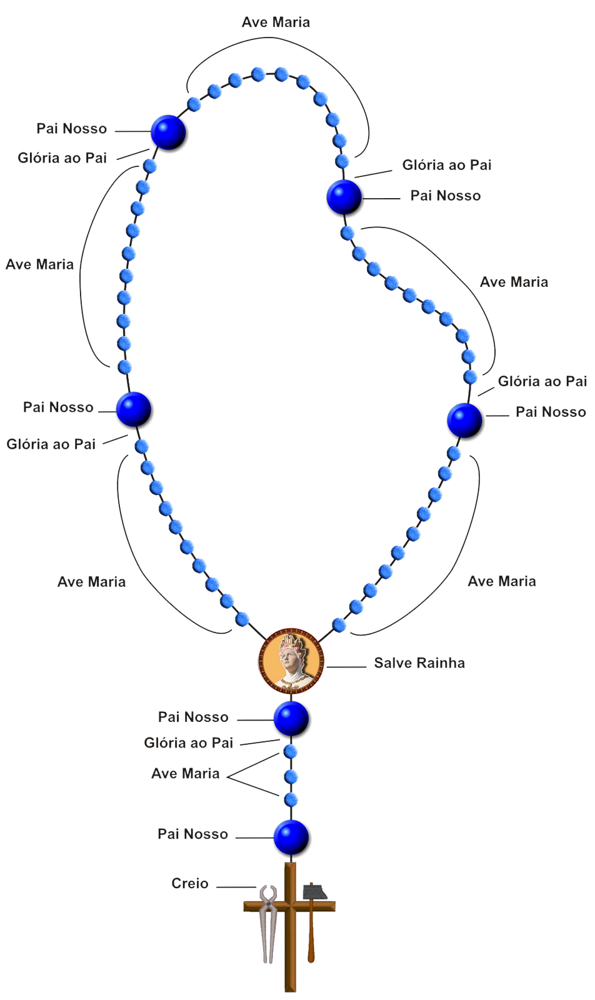

Hoje é sábado, portanto contemplamos os mistérios Você escolheu contemplar os mistérios
gozosos.

O Rosário é a oração dos simples, dos pequeninos.
#/ Benefícios de rezar o terço:
Nos dá um reconhecimento perfeito de Jesus Cristo;
Purifica e lava nossas almas do pecado;
Nos da a vitória sobre todos nossos inimigos;
Torna-nos mais fácil praticar as virtudes;
Nos coloca no fogo com o amor de Nosso Senhor;
Enriquece-nos de graças e méritos;
Fornece-nos o que é necessário para pagar nossas faltas à Deus.
#/ Por que devemos rezar o terço?
Devemos rezar o terço para a nossa salvação, ele é a arma espiritual poderosa que "afugenta os demônios". Livra-nos de muitos males além de termos a proteção incessante de Maria Santíssima.
#/ História do terço
Segundo uma tradição, a Igreja católica recebeu o Rosário em 1206 quando a virgem Maria apareceu a "São Domingos Gusmão" e o entregou como uma arma poderosa para a conversão dos hereges e outros pecadores da época. Desde então sua devoção propagou por todo o mundo em milagrosos resultados.
#/ Qual a diferença de Rosário e Terço?
De forma bem resumida, o terço é uma terceira parte do rosário, por isto se chama "Terço". O rosário também se resume em uma oração Cristocêntrica, onde Jesus Cristo é centro, ou seja, Jesus é a intenção durante toda oração do Rosário ou Terço. Enquanto você vai meditando os mistérios da vida de Jesus vai se rezando oralmente Ave-marias.
#/ O que é o "Rezando o terço"?
"Rezando o terço" é este simples site capaz de nós ajudar durante a oração do terço, através de uma transição de imagens ele vai te guiando pelos mistérios mostrando ilustrações e pequenas mensagens para te ajudar a contemplar de uma forma meritória os místerios do rosário.
#/ Como usar o "Rezando o terço"?
Para utilizar o "Rezando o terço", é necessário que primeiramente você saiba rezar o terço, caso você não souber, logo a baixo tem um tópico explicativo.
No início da página lhe é mostrado o mistério correto para o dia corrente, caso seja desejado contemplar outro mistério basta clicar em cima do mesmo e escolher;
Para iniciar clique no botão "Rezar o terço", assim você será redirecionado para uma página nova correspondente ao mistério, depois clique em "Começar";
Feito isso, abrir-se-á uma janela com os oferecimentos, ao clicar em "próximo" você vai avançando os mistérios até concluir o terço.
#/ Como rezar o terço?

* obs: geralmente todas a bíblias católicas vem com uma explicação de como rezar o terço especialmente a bíblia da editora AVE-MARIA.
Devemos nos deixar formar pela Virgem Maria, pois como diz São Luiz Maria Grignion de Montfort, ela é o molde perfeito de Jesus e se nos assemelharmos a ela, nos assemelhamos a Jesus Cristo.